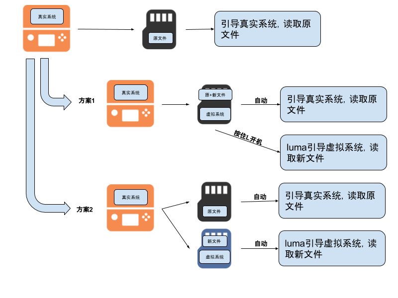

这篇教程是给使用A9破解和NTR内录但是升级了11.4的朋友看的。通过这篇教程，你会制造出一个11.3的虚拟系统用来实现NTR的视频传输。完成教程后，你可以拥有其中一种：按住L开机进虚拟11.3系统、不按L进真实系统的一张sd卡；或者直接开虚拟11.3的副sd卡+和原来完全一样的主sd卡（也就是说你制作了一张NTR内录专用sd卡）。如图所示：

(1) 方案1: 只需一张卡（后面简称主卡），如果安装许多下载版或者CIA的，需要很大容量，建议64GB；
(2) 方案2: 另外用一张sd卡（后面简称副卡）作专门内录卡，好处是不需要动原来的sd卡；
Decrypt9WIP.bin和EmuNAND9.zip中的EmuNAND9.bin，到sd卡中的luma/payloads/文件夹；注意：从这一步开始，你要对制作虚拟系统的sd卡进行操作，如果是选择方案2，这后面都是用的副卡
EmuNAND.bin复制到电脑里EmuNAND.bin，等待读条；boot.3dsx、arm9loaderhax.bin和luma文件夹复制回sd卡根目录；files9文件夹复制到sd卡根目录，拔卡插回3ds；勾选Autoboot SysNAND是自动进真实系统、按住L开机进虚拟系统。不勾就是按L进真实。所以副卡不勾，主卡看你喜好。
*.tik文件；恭喜你已经成功制作了11.3的虚拟系统，接下来你可以安装用FBI安装DevMenu.cia、SaveDataFile.cia和游戏，导入存档(如果没有的话)。然后，你可以安装NTRSelector.cia或者用你的老办法来运行NTR内录了。
祝大家游戏愉快！
转载请注明作者和出处。